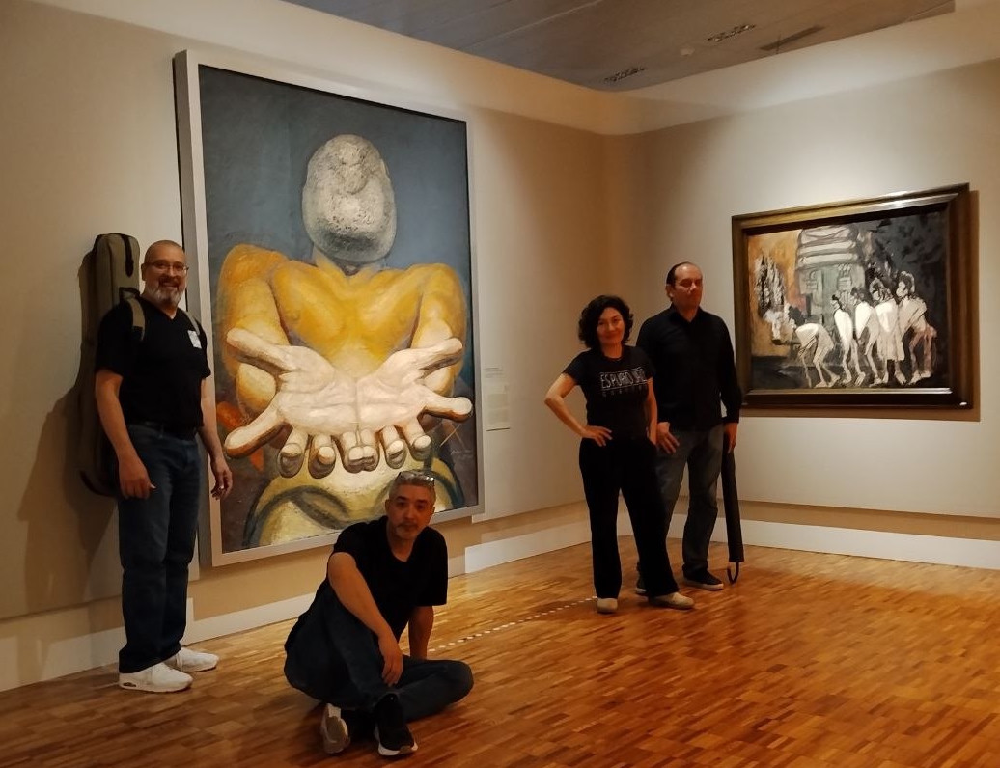
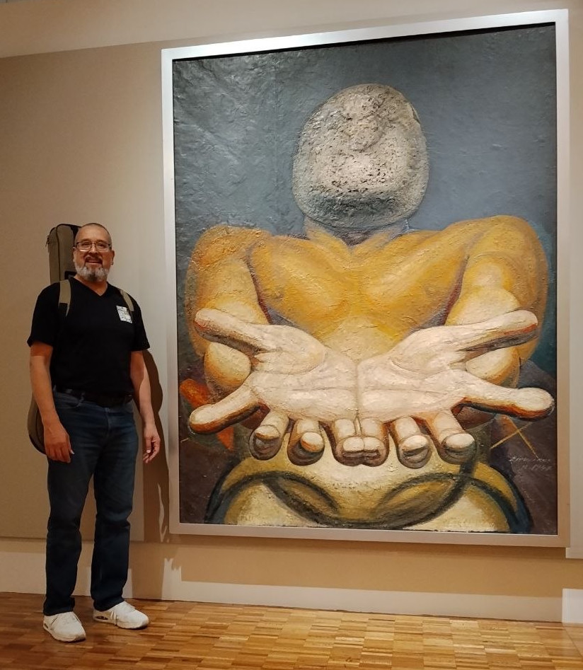

Discografía
Óscar Cárdenas en concierto
2001

ES PURiO JAZZ - Claude Bolling
2010

Teine
2018

Frente al Espejo
2025
Compositor y Guitarrista Mexicano
"...la única forma verdaderamente completa de acercarse a la música es escuchándola." — Juan Arturo Brennan
La expresión musical viva es una de las experiencias más ricas que nos permite sentir toda una gama de sensaciones. Es una necesidad expresar todo el abanico de sentimientos inmersos en cada obra, llevando la herencia cultural que nos ha determinado. El único hilo conductor de mi diversidad musical es el compromiso de compartir contigo la pasión por la que vivo: hacer música.
Joaquín Rodrigo
Michael Praetorius
Óscar Cárdenas (Obra propia)
ES PURiO JAZZ quarteto
ÓSCAR CÁRDENAS | Guitarrista y Compositor
Originario de la Ciudad de Chihuahua, Óscar Cárdenas inició su acercamiento a la guitarra de la mano de su padre, para posteriormente formalizar sus estudios con el maestro Cleofas Villegas en su estado natal. En 1989 se trasladó a la Ciudad de México para estudiar en el Conservatorio Nacional de Música bajo la tutela del maestro Juan Carlos Chacón. En 2004 obtuvo la Licenciatura como Instrumentista con especialidad en Guitarra en la Facultad de Música de la UNAM.
Su sólida formación se ha enriquecido de manera constante a través de clases magistrales con figuras de la talla de Alirio Díaz, Leo Brouwer, Frank Bungarten, entre otros. Como concertista, ha ofrecido recitales en diversos estados de la República Mexicana y en Belice, actuando como solista con prestigiadas orquestas bajo la batuta de directores como Enrique Diemecke y Jorge Córdoba.
En su faceta compositiva, ha desarrollado un catálogo diverso que abarca desde guitarra sola hasta formaciones de cámara y jazz con su ensamble ES PURiO JAZZ quarteto. En diciembre de 2025, presentó su álbum monográfico "Frente al Espejo", consolidando su voz única en la composición guitarrística contemporánea.


Haz clic en las imágenes para ampliar
2001
2010
2018
2025